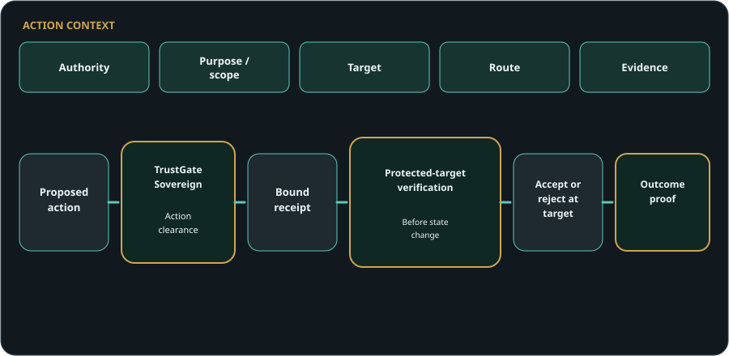
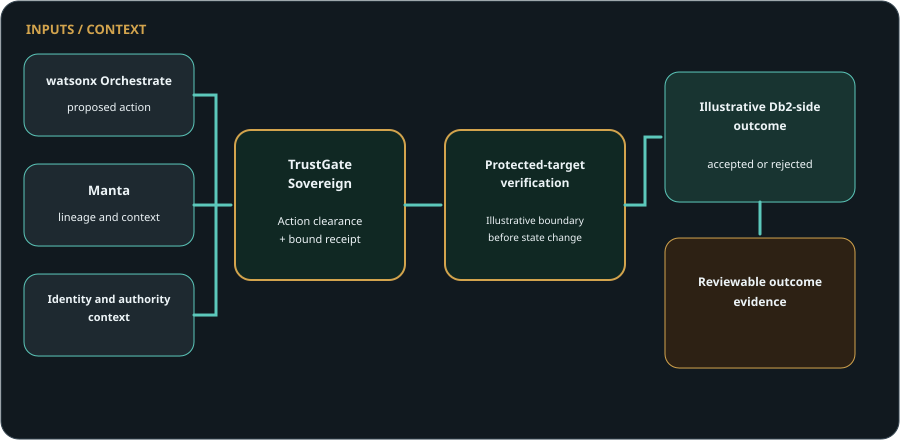
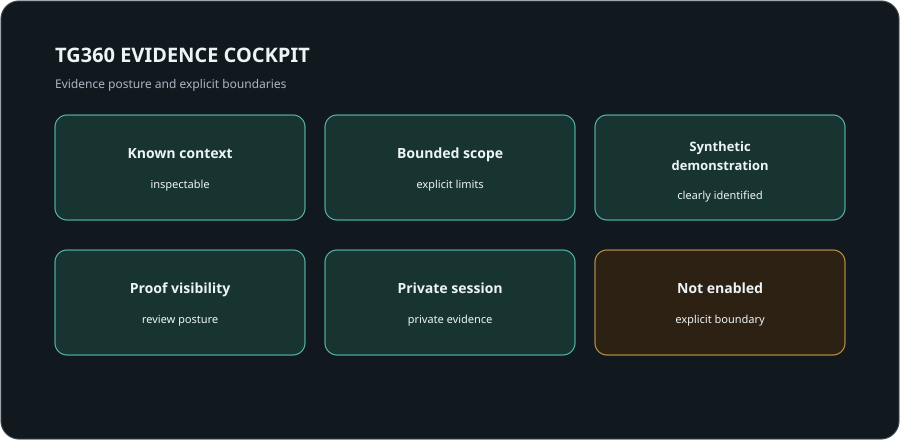

Deployment governance
May this AI service operate?
TrustGate Sovereign
AI is moving from recommendation to action. TrustGate evaluates whether one exact consequential action may proceed, binds the decision into a clearance receipt, and gives a protected target the evidence needed to verify that clearance before accepting a change.
A governed deployment and a governed platform do not automatically authorize a specific action.

A decision alone is not execution authority. The protected target verifies the TrustGate clearance before changing state.
Demonstrated through a bounded local reference path. No production enforcement, customer deployment, cross-process security guarantee or enterprise-wide non-bypassability is claimed.
The gap
Most AI control discussions sit around deployments, platforms, models, tools, workflows, logs, or audits. Those controls matter. But they are not the same as clearing a specific action before it moves.
May this AI service operate?
Is the agentic environment governed?
May this exact action proceed?
Does the target verify the exact clearance before accepting the change?
A governed airport does not mean every flight may take off. A cleared flight still needs its clearance verified before entering the protected runway.
Principal → Control → Proof
TrustGate Sovereign connects the accountable principal and purpose to one exact action, target, route, evidence, impact, policy, clearance, receipt, target verification, and outcome proof.
The public model is intentionally high-level. Private walkthroughs show the evidence pattern without exposing proof internals.
Protected clearance
TrustGate clears one exact action and binds the decision into evidence. A protected target can then verify that the clearance matches the action, target and current context before accepting a change. Invalid, altered, reused or stale clearance is rejected before the target changes.
Demonstrated through a bounded local reference path. No production enforcement, customer deployment, cross-process security guarantee or enterprise-wide non-bypassability is claimed.
Illustrative working scenario
For example, watsonx Orchestrate may propose an action and Manta may provide lineage and context. TrustGate Sovereign evaluates the exact action and binds its clearance into a receipt. An illustrative protected-target boundary then verifies the clearance before an illustrative Db2-side target outcome is accepted or rejected and preserved as reviewable evidence.
The same architectural pattern is not limited to that stack. Other orchestration environments — for example, LangGraph, Microsoft Copilot Studio, or Amazon Bedrock AgentCore — together with other lineage, catalogue, governance, data, application, or API systems may occupy the corresponding roles. TrustGate Sovereign is designed around the execution-control pattern, not a single vendor stack.

Illustrative enterprise-stack example only. Architectural roles may be fulfilled by other enterprise technologies. No live, certified, supported, endorsed, production or partner integration is claimed.
TG360
TG360 displays the accepted local evidence chain from action clearance to receipt verification and protected-target outcome. It presents evidence; it does not become a second decision engine.
TG360 also shows whether the bounded reference target changed or remained unchanged after the accepted or rejected action.

TGSG surfaces
TrustGate Sovereign is designed to make several trust surfaces inspectable in private review: tool and capability trust, knowledge and retrieval authority, content and document integrity, workflow and autonomy boundaries, budget and latency envelopes, and multi-agent provenance.
Which tools and capabilities are in scope for the requested action?
Which knowledge sources and retrieval paths are sufficient for this action?
What content or document state supports the decision point?
Where does the workflow stop, escalate, or require review?
What operational envelope is acceptable before execution?
Which agentic steps led to the requested action?
These surfaces are described publicly at a category level only. Internal implementation details stay private.
Why adopt
TrustGate Sovereign helps leaders reason about action authority, risk, escalation, and proof before agentic AI is trusted with material work. The value depends on customer environment, scope, baseline, and operating model.
Clarify where agentic AI may act, and where it must pause.
Make action risk easier to inspect before execution.
Define when review, hold, or escalation is the right outcome.
Connect authority, route, evidence, and outcome in one review posture.
Prepare action-level evidence for later control and assurance review.
Support governance of material movement before commitment.
Show that the target verifies the clearance before accepting a consequential change.
Preserve action-level evidence for control review, failure analysis and resilience testing.
Risk and resilience
TrustGate supports DORA-oriented control evidence. It does not independently determine regulatory compliance.
Who requested, approved and owned the action?
What target, route, evidence, impact and current context were evaluated?
Which tool, API, provider or workflow route was involved?
What decision, reason, receipt and target outcome were recorded?
Can invalid, altered, reused or stale clearance be shown as rejected before state change?
Private walkthrough
Private walkthroughs can cover action-clearance context, receipt and outcome evidence, the protected-target verification principle, accepted and rejected synthetic reference scenarios, the TG360 evidence cockpit, DORA-oriented control evidence, the data-protection accountability lens, enterprise architecture roles, and claims-boundary review.
Related systems
TrustGate Sovereign leads this page. The related systems stay secondary and support the same evidence-first discipline.
Local technical proof slice for pre-execution action certification and proof preservation.
Training-data accountability evidence packs for review by DPO, legal, risk, CISO, and audit teams.
Engineering simulation review evidence for baseline-vs-variant comparison.
Controlled disclosure
The public page shows the value pattern and the review posture. Some proof belongs in a room, not on a homepage. Private walkthroughs show controlled demonstrations, evidence patterns, TG360 context, and architecture roles while implementation detail stays private.
Private walkthrough
Use this track for Chief Risk Officers, operational-resilience leaders, DPO/privacy leaders, CISOs, CIOs, AI-governance leaders, internal audit, enterprise architecture, technical governance and executive-adoption conversations.